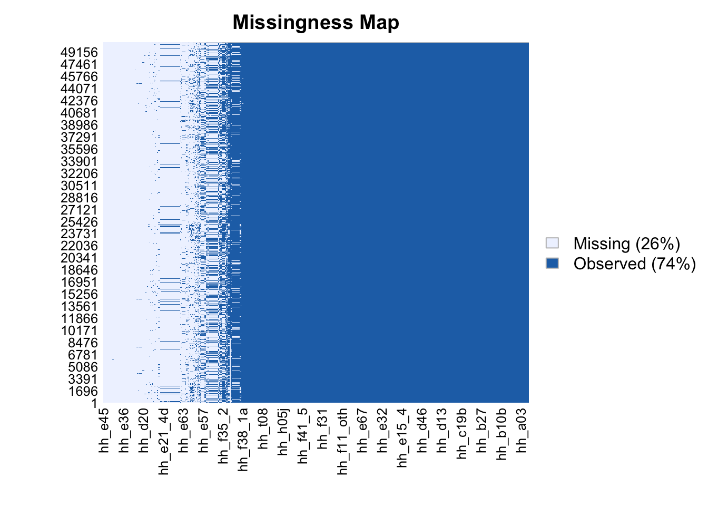
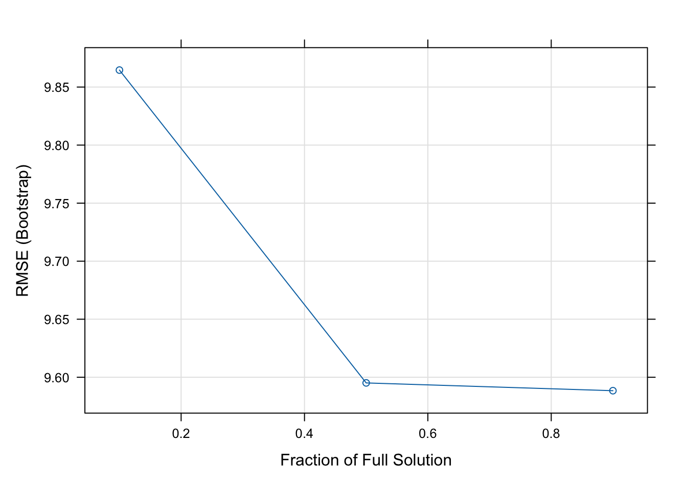
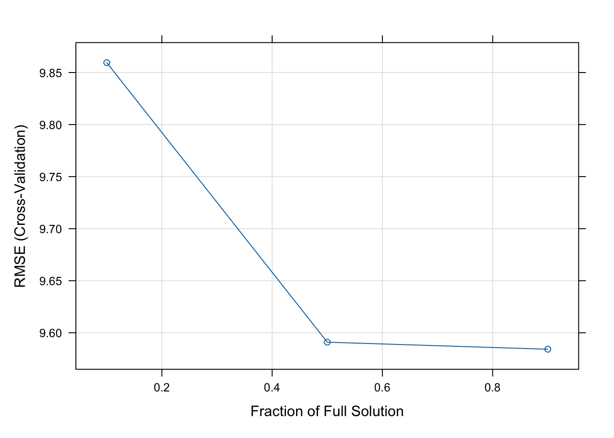

Supervised Machine Learning: Lasso and Ridge shrinkage methods (Regression II)
An introduction to penalised models for Machine Learning
An OLS regression is not the only model that can be written in the form of \(Y_i = \alpha + \beta_1X_{1i}, \beta_2X_{2i},..., \beta_pX_{pi}+ u_i\). In this section we will discuss “penalised” models, which can also be expressed as a linear relationship between parameters. Penalised regression models are also known as regression shrinkage methods, and they take their name after the colloquial term for coefficient regularisation, “shrinkage” of estimated coefficients. The goal of penalised models, as opposed to a traditional linear model, is not to minimise bias, but to reduce variance by adding a constraint to the equation and effectively pushing coefficient parameters towards \(0\). This results in the the worse model predictors having a coefficient of zero or close to zero.
Our practical exercise in R will consist of running a Lasso model using the caret package.
Lasso
Consider a scenario where you have dozens (maybe thousands?) of predictors. Which covariates are truly important for our known outcome? Including all of the predictors leads to over-fitting. We’ll find that the R^2 value is high, and conclude that our in-sample fit is good. However, this may lead to bad out-of-sample predictions. Model selection is a particularly challenging endeavour when we encounter high-dimensional data: when the number of variables is close to or larger than the number of observations. Some examples where you may encounter high-dimensional data include:
Cross-country analyses: we have a small and finite number of countries, but we may collect/observe as many variables as we want.
Cluster-population analyses: we wish to understand the outcome of some unique population \(n\), e.g. all students from classroom A. We collect plenty of information on these students, but the sample and the population are analogous \(n = N\), and thus the sample number of observations is small and finite.
The LASSO - Least Absolute Shrinkage and Selection Operator imposes a shrinking penalty to those predictors that do not actually belong in the model, and reduces the size of the estimated \(\beta\) coefficients towards and including zero (when the tuning parameter / shrinkage penalty \(\lambda\) is sufficiently large). Note that \(lambda\) is the penalty term called L1-norm, and corresponds to the sum of the absolute coefficients.
R practical tutorial
To exemplify the above, we will go through an exercise using the previously introduced LSMS data set. This might become relevant as there are many variables in the data set that we did not choose/consider before. Importantly, we had worked hard to try to find a way to increase the accurate prediction of Food Consumption. Including the improvements made by the transformation of the target variable, we were able to provide a model with low bias, a.k.a. a low RMSE value, but with a low R^2. Perhaps now, with the ability to include as many variables as we want in the model, and allowing the LASSO algorithm to select those which are relevant for the target variable, we might be able to increase the explained model variance!
rm(list=ls())
# 0. Libraries
library(plyr)
library(tidyverse)
library(data.table)
library(caret)
library(Hmisc)
library(elasticnet) # works in conjunction with caret for lasso models## Loading required package: lars## Loaded lars 1.3library(corrplot)
library(Amelia)## Loading required package: Rcpp## ##
## ## Amelia II: Multiple Imputation
## ## (Version 1.8.1, built: 2022-11-18)
## ## Copyright (C) 2005-2023 James Honaker, Gary King and Matthew Blackwell
## ## Refer to http://gking.harvard.edu/amelia/ for more information
## ##library(knitr)
library(skimr)
# 1. Upload data and subset
malawi <- fread("/Users/michellegonzalez/Desktop/MachineLearning4PP 2/Machine-Learning-for-Public-Policy/malawi.csv", drop="V1")
column_names <- c("reside","hhsize","hh_b05a","sumConsumption","hh_s01","hh_b03","hh_c09","hh_c24","hh_d10","hh_d11","hh_d12_1","hh_f19","hh_f34","hh_t08","hh_t01","hh_t14")
malawi2 <- malawi[,column_names, with=FALSE]Notice that this time, we’ve kept two data sets. One containing the full set of variables (514), and another which contains only the variables that we had recognised as possibly relevant in the past.
Our next step would be to clean the data by getting rid of missing values. A task that is easy for the 17 vector dataframe, but may seem daunting for the dataframe with 515 variables. How do we go about this? Let’s first find interesting ways of visualising missing data in a compact way.
For small dataframes: skimr
str(malawi2)## Classes 'data.table' and 'data.frame': 50476 obs. of 16 variables:
## $ reside : chr "RURAL" "RURAL" "RURAL" "RURAL" ...
## $ hhsize : int 4 4 4 4 4 4 4 4 4 4 ...
## $ hh_b05a : int 11 41 34 4 13 55 18 13 0 25 ...
## $ sumConsumption: num 71 71 71 71 37.5 ...
## $ hh_s01 : chr "YES" "YES" "YES" "YES" ...
## $ hh_b03 : chr "MALE" "MALE" "FEMALE" "MALE" ...
## $ hh_c09 : chr "NONE" "NONE" "NONE" "" ...
## $ hh_c24 : chr "No" "No" "No" "" ...
## $ hh_d10 : int 0 0 0 0 0 0 0 0 0 0 ...
## $ hh_d11 : int 0 0 0 0 0 0 0 0 0 0 ...
## $ hh_d12_1 : int 0 0 0 0 0 0 0 0 0 0 ...
## $ hh_f19 : chr "NO" "NO" "NO" "NO" ...
## $ hh_f34 : int 1 1 1 1 0 0 0 0 1 1 ...
## $ hh_t08 : chr "IS NOT SUFFICIENT, SO YOU NEED TO USE YOUR SAVINGS TO MEET EXPENSES" "IS NOT SUFFICIENT, SO YOU NEED TO USE YOUR SAVINGS TO MEET EXPENSES" "IS NOT SUFFICIENT, SO YOU NEED TO USE YOUR SAVINGS TO MEET EXPENSES" "IS NOT SUFFICIENT, SO YOU NEED TO USE YOUR SAVINGS TO MEET EXPENSES" ...
## $ hh_t01 : chr "It was just adequate for household needs" "It was just adequate for household needs" "It was just adequate for household needs" "It was just adequate for household needs" ...
## $ hh_t14 : chr "NO" "NO" "NO" "NO" ...
## - attr(*, ".internal.selfref")=<externalptr>This package is a combination of the commands str(x) and colSums(is.na(x)), which we had previously used to explore the data (vector class, dataframe dimension), and the number of missing values per vector. What is the advantage? It also includes the parameter `empty’, for character vectors. Before, we had to plot tables of all our vector characters to find out that there were empty rows that were not being recognised as missing values.
Another great feature of this package is that it allows us to see the complete rate of a variable. We had previously ignored the possibility of imputing data, claiming we had too many missing values. Now, we can make that claim with some statistical certainty, or disprove it and choose to impute values. For example, our target variable has about 80% of its values. With as many complete cases, I would try to impute the remaining 20%. Note that there us no consensus on a cutoff of missingness that is valid to impute, but I once heard a professor say 20 or less, and that’s what I go by (therefore, take this ‘rule of thumb’ with a grain of salt). The handling of missing data is a whole lecture in itself, so we will do as before and simply delete all missing values, an approach that is the default for many statistical packages. In general, when imputing data (which the caret pkg can do for you!), you should consider two things: 1) What you are trying to do with your model (causality, or prediction?); and 2) whether the Missing At Random (MAR) assumption holds for you to attempt multiple imputation. To read more about this topic for your future research, I recommend you read the book Flexible Imputation of Missing Data, which also comes with examples in R.
*Unfortunately, I can’t render skim() objects on the website, but the code works just fine in the R script.
For large dataframes: Amelia
missmap(malawi) The `missingness map’ produced by the Amelia pkg (which is, in fact, a package for multiple imputation), is a good way to start eyeing if there are certain variables – say, a large set – that we should not even consider. The actual image is only showing a subset of the tens of thousands of observations (y-axis) and hundreds of variables (x-axis). However, given that the missing values seem to be mostly concentrated in full variables rather than spread across the dataframe, we should probably select some variables from the dataframe rather than throwing the roughly 500 variables (most of which are empty) into a Lasso regression. In sum, our original approach of subsetting the dataframe by looking at variables that might be good predictors (based on our expert knowledge, of course) was not that bad given this dataframe.
Adding new variables to our 17-vector malawi dataframe
Because we have already done the cleaning of this data set, we know that we will end up with less that 17 vectors. Before we fully forget about the larger 515 data set and, indeed, before we start the cleaning process, I’d like to add some other predictors. I’ll focus on variables from Module E: Time Use and Labour (from which we have none).
- Does [NAME] want to change his/her current employment situation? (hh_e70)
- Would [NAME] want to work more hours per week than usual? (hh_e67)
- During the last four weeks, did [NAME] looked for additional paid work? (hh_e66)
- How many hours did [NAME] spend yesterday collecting water? (hh_e05)
- ..hours did [NAME]spend yesterday collecting firewood(or other fuel materials)? (hh_e06)
column_names <- c("reside","hhsize","hh_b05a","sumConsumption","hh_s01","hh_b03","hh_c24","hh_d10","hh_d11","hh_d12_1","hh_f19","hh_f34","hh_t08","hh_t01","hh_t14", "hh_e70", "hh_e67", "hh_e66", "hh_e05", "hh_e06")
malawi <- malawi[,column_names, with=FALSE]
# Note that I also deleted a predictor with zero variance from this list. We caught the intruder in Regression I: hh_c09Now, we will do our missing value clean-up. Since you should already know how to do this, I won’t add much explanation to the code below:
# While skimr is a great pkg, I love the simplicity of colSums(is.na(x)) right before I clean a df.
colSums(is.na(malawi))## reside hhsize hh_b05a sumConsumption hh_s01
## 0 0 0 9046 0
## hh_b03 hh_c24 hh_d10 hh_d11 hh_d12_1
## 0 0 0 0 0
## hh_f19 hh_f34 hh_t08 hh_t01 hh_t14
## 0 0 0 0 0
## hh_e70 hh_e67 hh_e66 hh_e05 hh_e06
## 0 0 0 6879 6880malawi <- malawi[-which(is.na(malawi$sumConsumption)),]
# With the line above, I have just gotten rid of the missing values from our target variable. According to our colSums(is.na(x)) there are still two other vectors with missing values. Luckily, they seem to be few - from the same E module - and in similar quantities. These two are the variables that asked about time spent collecting water or wood. My assumption is that they're the same people in both questions that are not giving us a response.
malawi <- na.omit(malawi)
# This line deletes ALL missing values from the entire data set. In this specific case, it only applied to two variables since we had already gotten rid all the missingn values from the target variable. Take a glimpse:
colSums(is.na(malawi))## reside hhsize hh_b05a sumConsumption hh_s01
## 0 0 0 0 0
## hh_b03 hh_c24 hh_d10 hh_d11 hh_d12_1
## 0 0 0 0 0
## hh_f19 hh_f34 hh_t08 hh_t01 hh_t14
## 0 0 0 0 0
## hh_e70 hh_e67 hh_e66 hh_e05 hh_e06
## 0 0 0 0 0Now let’s do a quick visualisation to see if we catch anything else. Again, I expect you to be able to interpret histograms and tables, since this is a repetition of what we already did in Regression I. I won’t expand on the explanations. We will start with numeric and integer vectors (i.e. continuous distributions).
malawi_continuous <- malawi %>% select_if(~is.integer(.) | is.numeric(.))
hist.data.frame(malawi_continuous)The only thing we did not do last time, was try to understand the distributions which bunched at the zero value. We will do that now.
summary(malawi$hh_d10) #Amt [NAME] spent in the past 4 weeks for all illnesses and injuries?## Min. 1st Qu. Median Mean 3rd Qu. Max.
## 0.0 0.0 0.0 124.4 0.0 220000.0unique(malawi$hh_d10) # variable distribution is legitimate.## [1] 0 2800 250 1300 1100 1000 300 8 600 10000
## [11] 1500 2500 2000 3000 100 200 500 6000 3500 7500
## [21] 4500 25000 13000 8000 800 4000 4800 11000 6300 5000
## [31] 4 400 14 4100 1200 1800 2700 3800 6500 7000
## [41] 3400 5500 1350 900 5200 6800 15000 12 3850 350
## [51] 50 7 75000 3700 2300 3 2100 150 700 30000
## [61] 34750 240 9000 450 12000 2400 2200 9950 8600 2
## [71] 5300 9 2650 9750 4250 5 5900 1 5400 1600
## [81] 14000 10500 7140 1050 750 3600 2900 1400 80 180
## [91] 48000 2850 11200 1950 1250 2350 2230 7550 1700 3440
## [101] 3200 7700 20000 7800 4400 9600 1550 23000 17000 3085
## [111] 2600 6400 2550 3950 2450 220000 5800 8500 39000 18000
## [121] 28000 850 2250 9500 2220 16500 3880 43000 5040 3750
## [131] 6 6875 4600 1850 25 2150 6200 5080 13500 9900
## [141] 12500 16400 550 320 8550 1900 120 14200 29000ill_people_spentCash <- length(which(malawi$hh_d10!=0))
cat(sprintf("%.0f people/households spent money on an illness, out of 41,430, in the past 4 weeks.", ill_people_spentCash))## 1301 people/households spent money on an illness, out of 41,430, in the past 4 weeks.cat("Variables from the H section of the Household module all follow similar distributions due to the type of question asked.")## Variables from the H section of the Household module all follow similar distributions due to the type of question asked.names(malawi)[names(malawi) == "hh_d10"] <- "total_spent_on_illness"
names(malawi)[names(malawi) == "hh_d11"] <- "total_spent_on_non_illness_medicalcare"
names(malawi)[names(malawi) == "hh_d12_1"] <- "total_spent_on_medicalinsurance"Let’s visualise factor vectors:
malawi_factor <- malawi %>% select_if(~is.character(.))
malawi_factor <- as.data.frame(unclass(malawi_factor),stringsAsFactors=TRUE)
llply(.data=malawi_factor, .fun=table)## $reside
##
## RURAL URBAN
## 30873 4901
##
## $hh_s01
##
## NO YES
## 25094 10680
##
## $hh_b03
##
## FEMALE MALE
## 18629 17145
##
## $hh_c24
##
## No Yes
## 34278 1496
##
## $hh_f19
##
## NO YES
## 31682 4092
##
## $hh_t08
##
##
## 3
## ALLOWS YOU TO BUILD YOUR SAVINGS
## 2141
## ALLOWS YOU TO SAVE JUST A LITTLE
## 4963
## IS NOT SUFFICIENT, SO YOU NEED TO USE YOUR SAVINGS TO MEET EXPENSES
## 7028
## IS REALLY NOT SUFFICIENT, SO YOU NEED TO BORROW TO MEET EXPENSES
## 6641
## ONLY JUST MEETS YOUR EXPENSES
## 14998
##
## $hh_t01
##
##
## 3
## It was just adequate for household needs
## 11739
## It was less than adequate for household needs
## 22182
## It was more than adequate for household needs
## 1850
##
## $hh_t14
##
## DON'T KNOW NO YES
## 3 23 6938 28810
##
## $hh_e70
##
## No Yes
## 16508 15719 3547
##
## $hh_e67
##
## No Yes
## 31833 3941
##
## $hh_e66
##
## No Yes
## 34496 1278The following variables contain missing data (empty spaces that were recognised by R as a category and not a missing value): “hh_c09, hh_e70 (too many, delete variable), hh_t14, hh_t01, hh_t08”. Let’s rid them of those pesky empty spaces.
malawi <- as.data.frame(unclass(malawi),stringsAsFactors=TRUE) # Convert character vectors into factors in malawi dataframe
malawi <- malawi[,-which(colnames(malawi)=="hh_e70")]
# In the Challenge Solution tab of Regression I we used the command droplevels() to delete the level recognised as an empty space from each variable. This is another way of doing this which will also allow us to keep track of how many values we delete.
length(which(malawi$hh_t14=="")) # 3 empty spaces## [1] 3levels(malawi$hh_t14)[levels(malawi$hh_t14)==""] <- NA
sum(is.na(malawi$hh_t14)) # 3 missing values ## [1] 3length(which(malawi$hh_t01=="")) # 3 empty spaces## [1] 3levels(malawi$hh_t01)[levels(malawi$hh_t01)==""] <- NA
sum(is.na(malawi$hh_t01)) # 3 missing values## [1] 3length(which(malawi$hh_t08=="")) # 3 empty spaces## [1] 3levels(malawi$hh_t08)[levels(malawi$hh_t08)==""] <- NA
sum(is.na(malawi$hh_t08)) # 3 missing values## [1] 3colSums(is.na(malawi)) # Some of these missings are overlapping.## reside hhsize
## 0 0
## hh_b05a sumConsumption
## 0 0
## hh_s01 hh_b03
## 0 0
## hh_c24 total_spent_on_illness
## 0 0
## total_spent_on_non_illness_medicalcare total_spent_on_medicalinsurance
## 0 0
## hh_f19 hh_f34
## 0 0
## hh_t08 hh_t01
## 3 3
## hh_t14 hh_e67
## 3 0
## hh_e66 hh_e05
## 0 0
## hh_e06
## 0malawi <- na.omit(malawi)
colSums(is.na(malawi))## reside hhsize
## 0 0
## hh_b05a sumConsumption
## 0 0
## hh_s01 hh_b03
## 0 0
## hh_c24 total_spent_on_illness
## 0 0
## total_spent_on_non_illness_medicalcare total_spent_on_medicalinsurance
## 0 0
## hh_f19 hh_f34
## 0 0
## hh_t08 hh_t01
## 0 0
## hh_t14 hh_e67
## 0 0
## hh_e66 hh_e05
## 0 0
## hh_e06
## 0Lasso model with caret package
First, we will create a new target vector, as per the solution to our challenge in Regression I.
# Per capita food consumption, per day
malawi$Cons_pcpd <-(malawi$sumConsumption / malawi$hhsize)/7
# Now let's get rid of household food consumption, weekly
malawi <- malawi[,-which(colnames(malawi)=="sumConsumption")]Next, we will partition our data into train and test sets:
set.seed(12345) # Recall that using a seed allows us to replicate the exact partition (which relies on a random rample selection) every time we run the model
train_idx <- createDataPartition(malawi$Cons_pcpd, p = .8, list = FALSE, times = 1)
Train_df <- malawi[ train_idx,]
Test_df <- malawi[-train_idx,]Are you ready to rumble? We can now use the train() function from the caret package to create our Lasso model.
model_lasso <- train(
Cons_pcpd ~ .,
data = Train_df,
method = 'lasso',
preProcess = c("center", "scale") #This will scale and center all relevant variables in the model
)
print(model_lasso)## The lasso
##
## 28619 samples
## 18 predictor
##
## Pre-processing: centered (23), scaled (23)
## Resampling: Bootstrapped (25 reps)
## Summary of sample sizes: 28619, 28619, 28619, 28619, 28619, 28619, ...
## Resampling results across tuning parameters:
##
## fraction RMSE Rsquared MAE
## 0.1 9.864623 0.07498428 4.017711
## 0.5 9.595137 0.09158449 3.978529
## 0.9 9.588421 0.09240227 4.010338
##
## RMSE was used to select the optimal model using the smallest value.
## The final value used for the model was fraction = 0.9.If we look at the performance of our Lasso model with 1) new predictors, 2) a more ad-hoc target variable, and c) properly clean data, we have managed to decrease the bias all the way down to \(9,8\)! Unfortunately, after the penalisation the R^2 value is \(0.08\), or roughly eight percent of the variance explained. Importantly, we did something that we have not yet explained: centered and scaled the selected predictors.
Centering and Scaling in Lasso: Recall that the L1-norm puts constraints on the size of the coefficients of the Lasso regression. The size, of course, differs based on the different scales the variables are measured. Having 1 and up to 55 electric gadgets at home is not the same as earning between 1000 and 100,000 monthly (of whichever currency you want to imagine here). There are two immediate consequences of centering and scaling (or normalising). 1) There is no longer an intercept. 2) It is easier to rank the relative magnitude of the coefficients post-shrinkage.
Now let’s take a look at our model:
plot(model_lasso)
cat("The x-axis is the fraction of the full solution (i.e., ordinary least squares with no penalty)")## The x-axis is the fraction of the full solution (i.e., ordinary least squares with no penalty)So, did the Lasso model penalised or got rid of some variables? Let’s take a look.
plot(varImp(model_lasso))We can clearly see the non-relevance of certain variables, and that the variable hh_e06 was deleted. It’s coefficient was shrunk to 0. Recall that the optimal model had a fraction of .9, so we knew (!=1) that at least one variable was deleted.
It seems like our prediction abilities take one step forward, two steps back…
Make predictions with the test data set
test_features <- subset(Test_df, select=-c(Cons_pcpd))
test_target <- subset(Test_df, select=Cons_pcpd)[,1]
lasso_predictions <- predict(model_lasso, newdata = test_features)
# RMSE
sqrt(mean((test_target - lasso_predictions)^2))## [1] 9.888506# R^2
cor(test_target, lasso_predictions) ^ 2## [1] 0.1051635Our manual results are much like what we observed from printing the model.
Cross validation: k-fold with caret()
What is cross-validation? Broadly speaking, it is a technique that allows us to assess the performance of our machine learning model. How so? Well, it looks at the “stability” of the model. It’s a measure of how well our model would work on new, unseen data; i.e. it has correctly observed and recorded the patterns in the data and has not captured too much noise (what we know as the error term, or what we are unable to explain with our model). K-fold cross validation is a good place to start for such a thing. In the words of The Internet™, what k-fold cross validation does is:
Split the input dataset into K groups
- For each group:
-Take one group as the reserve or test data set.
-Use remaining groups as the training dataset.
-Fit the model on the training set and evaluate the performance of the model using the test set.An Illustration by Eugenia Anello
Now let’s apply this to our model (a.k.a. let’s rumble!)
Beyond training and testing dataframes, what a k-fold (commonly 10-fold) cross validation does is resample the data to find an optimal (λ) lambda/penalisation for the lasso model and assess its predictive error. Recall: The optimal λ (lambda)/penalisation minimizes the out-of-sample (or test) mean prediction error.
set.seed(12345)
cv_10fold <- trainControl(
method = "cv", #cross-validation
number = 10, # k-fold = 10-fold (split the data into 10 similar-sized samples)
)
set.seed(12345)
lasso_kfold <- train(
Cons_pcpd ~ .,
data = Train_df,
method = 'lasso',
preProcess = c("center", "scale"),
trControl = cv_10fold
)
print(lasso_kfold)## The lasso
##
## 28619 samples
## 18 predictor
##
## Pre-processing: centered (23), scaled (23)
## Resampling: Cross-Validated (10 fold)
## Summary of sample sizes: 25758, 25757, 25757, 25759, 25756, 25756, ...
## Resampling results across tuning parameters:
##
## fraction RMSE Rsquared MAE
## 0.1 9.859488 0.07799664 4.019956
## 0.5 9.590976 0.09166445 3.974331
## 0.9 9.584186 0.09290247 4.002476
##
## RMSE was used to select the optimal model using the smallest value.
## The final value used for the model was fraction = 0.9.# The R^2 value has slightly improved. Hurray!
plot(lasso_kfold)
plot(varImp(lasso_kfold))
# We got rid of the same variable as before the cross validation.
lasso_10kpredictions <- predict(lasso_kfold, newdata = test_features)
# RMSE
sqrt(mean((test_target - lasso_10kpredictions)^2))## [1] 9.888506# R2
cor(test_target, lasso_10kpredictions) ^ 2## [1] 0.1051635A final note: there is some discussion over whether k-fold or really any cross validation technique is optimal for choosing the lambda parameter in Lasso models (see for example, this Coursera video). It is true that cross validation is something that we want to do for ALL our machine learning models. Just make sure to make an informed choice of which cross validation technique you’ll implement in your model.
In the end, Lasso has not helped us improve our prediction abilities more than the proper choice of target variable.
Ridge
A ridge regression includes ALL predictors in a model, but penalises predictors that contribute less to the model by shrinking them close to (but never) zero. The penalty term \(\lambda\) in a ridge regression is called the L2-norm and is the sum of the squared coefficients. The ridge regression is the predecessor to the lasso.
Selecting the value of \(\lambda\) is critical for ridge regressions; when \(\lambda = 0\), a ridge regression is essentially an OLS regression. As \(\lambda \rightarrow \infty\), the penalty increases and the regression coefficients approximate zero.
Copyright © 2022 Michelle González Amador & Stephan Dietrich . All rights reserved.